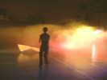
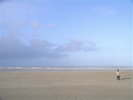
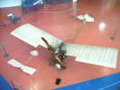
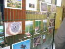
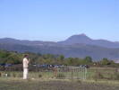

| Accueil | Premiers cerfs-volants | Cerfs-volants récents | Techniques et Plans | Fêtes et Reportages | Liens, Amis cervolistes | Mots Croisés | P |
|
 Indoor de Belleville (réd. 12 février 2008)Ma première rencontre de l'année, à 6 km de Dieppe. Indoor sympa, pas de compétition, rien que de l'amusement... Des cervolistes de qualité et adeptes de la convivialité... |
|
 Le WEBA 2007 (réd. 13 jan 2008)Une conviviale un peu spéciale, au bout de l'An... Jamais au même endroit, mais on a toujours froid... Une ambiance indestructible... pour courageux ! |
|
 Le Bourget (réd. 16 nov. 2007)Univ'Air, une rencontre dans les locaux du Musée de l'Air et de l'Espace ... Assortie d'une visite du MAE, évidemment, pour les participants... C'était en mars, mais je n'avais pas eu le temps de faire le reportage... |
|
 WE Aérophoto (réd. 22 oct. 2007)WE Aérophoto d'automne, à St-Jean-les-2-Jumeaux, chez Emmanuel... Une salle de sport pour l'expo de photos et de matériels... Un château et une ferme ancienne comme objectifs... |
|
 Cervolix (réd. 16 oct. 2007)Le plateau de Gergovie, site magnifique près de Clermont-Ferrand... Une organisation bien rodée, un parking de 6000 places... Brouillard samedi, grand beau temps dimanche (et peu de vent...). |
|
Et tous les reportages précédents : En 2007 : Fête de la Plume Dans la Ferme des Barreaux à Herry... (1er oct. 2007). Tours Sur la plaine de la Gloriette, au sud de Tours... (25 sept. 2007). Amiens Un splendide terrain plat avec une belle vue... (17 sept. 2007). Bénouville Près d'Etretat, sur la falaise... (11 sept. 2007). Préfailles Pas vraiment un reportage, mais des photos du Musée... (29 août 2007). Saint-Brévin Une belle plage, un accueil bien organisé... (27 août 2007). Brouilly Vaste panorama dominant la plaine de la Saône... (6 août 2007). Barneville Une belle plage, un accueil superbe... (31 juillet 2007). Penvins Site magnifique au bout d'un isthme, la mer de tous les côtés... (18 juillet 2007). Fécamp Avec les vieux gréements, entre les bassins et la mer... (26 juin 2007). Voisins-le-Bretonneux Au bord d'un lac, avec de majestueux immeubles Bofill... (11 juin 2007). Cayeux Accueil de première, franchement sympathique... (4 juin 2007). Verneuil 30ème anniversaire du CVCF à Verneuil, chez François... (29 mai 2007). Pornichet Trois jours de cerf-volant à ne pas oublier ! (21 mai 2007). Brie Pas loin de Paris, un grand parc, un terrain un peu plus petit ! (15 mai 2007). Vierzon Des cerfs-volants et des JdVs, un groupe berrichon, et des frites ! (8 mai 2007). Somain Dans le beau parc Anne Franck, convivial et familial... (2 mai 2007). Houlgate Un festival sur la plage, au milieu des baigneurs en semaine... (1er mai 2007). Trouville Un festival qui monte, une belle plage, peu de vent... (17 avr. 2007). Belleville Un festival indoor sur deux jours... (6 fév. 2007). Berck LE festival français, avec Dieppe... (13 avr. 2007). En 2006 : Cany-Barville Un indoor pour le Téléthon... (11 déc. 2006). Plaisir Un festival indoor, sur une journée... (27 nov. 2006). Vol Santos-Dumont Le 14-bis à Boulogne-Bagatelle. (5 nov. 2006). Moissy Mon premier festival indoor de la saison d'hiver ! (23 oct. 2006). Cervolix Là-haut sur le plateau de Gergovie ! (12 oct. 2006). Dieppe Un des plus grands festivals du monde, tous les 2 ans ! (4 oct. 2006). Tours Grand festival dans le parc de la Gloriette au bord du Cher ! (29 sept. 2006). Carolles Un site monofil inoubliable, dominant le Mont-St-Michel ! (4 sept. 2006). Saint-Brévin Un pique-nique sur la plage sous les parasols ! (30 août 2006). Mont-Brouilly Le 1er festival de Gaby, en Beaujolais ! (9 août 2006). Monts de Blond Des cerfs-volants, des ULMs, des montgolfières! (1er août 2006). Illiers Un beau terrain, 3 cervolistes, quel calme ! (16 juil. 2006). Meudon Une grande première dans le parc de l'Observatoire ! (4 juil. 2006). Outreau Un beau site, dans un parc sur une colline, avec vue sur mer ! (26 juin 2006). Fécamp Une grande plage de galets et les vieux gréements ! (20 juin 2006). Hirel Une grande convivialité pour cette fête du CVCF... (13 juin 2006). Stella-Plage Plage splendide chez Dominique Miquet... (7 juin 2006). Pornichet Une grande plage qui se continue sur la Baule... (29 mai 2006). Sully Une conviviale du CVCF IdF. (23 mai 2006). Marines Un festival spécial, orienté exotisme et combattants. (23 mai 2006). Brie-Comte-Robert Un festival près de Paris, les 24 h du cerf-volant ! (16 mai 2006). Vierzon Toujours sympathique, les Vents de Folie se dévouent pour ça ! (10 mai 2006). Somain Une conviviale de plus en plus importante ! (9 mai 2006). Houlgate Une belle plage du Calvados, sur 5 jours ! (4 mai 2006). Berck Le grand festival de printemps sur une plage illimitée ! (2 mai 2006). Orgemont Conviviale CVCF Ile De France (3 avril 2006). Coulaines/Le Mans Premier grand festival Outdoor 2006 (21 mars 2006). Rencontre IdF de Savigny Rencontre CVCF Ile De France (26 février 2006). Indoor d'Amiens Le premier indoor au Coliseum (13 février 2006). Indoor de Dieppe/Belleville Le premier indoor du club de Dieppe... (4/5 janvier 2006). En 2005 : WEBA Dieppe Le Week-End du Bout de l'An à Dieppe.... (28/29 décembre 2005). Conviviale d'Orgemont Un site magnifique dominant Paris... (11 décembre 2005). Indoor de Plaisir Bon accueil, compètes, démos... (28 novembre 2005). Indoor de Moissy-Cramayel La saison des indoors est partie (23 octobre 2005). Château de Vouzeron Beau château 1900, un accueil sympa (16 octobre 2005). Cervolix Un site inoubliable et beaucoup de cerfs-volants (8/9 octobre 2005). Tours La volonté de mélanger le public et les cervolistes (24/25 septembre 2005). Chantilly Sur l'hippodrome, devant les Grandes Ecuries ! (18 septembre 2005). Saint-Brévin Une belle grande plage... (27-28 août 2005). L'île Charlemagne Une fête pour le Secours Français... (21 août 2005). Blond 2005 CVs, ULMs, autogire, hélico, montgolfières... (30/31 juillet 2005). Penvins 2005 Orienté "pilotables", mais monofils acceptés.. (14..16 juillet 2005). Avord 2005 Plein de place dans le Parc Arboré et ses jardins... (3/4 juillet 2005). Outreau 2005 Sur les hauteurs de Boulogne sur mer... (25/26 juin 2005). Fécamp 2005 Beau site, les falaises, les vieux gréements... (17/18 juin 2005). Cayeux 2005 Conviviale sympa de Bruno Tondelier... (4-5 juin 2005). Vierzon 2005 De vrais cerfs-volants, pas des baudruches gonflées... (28-29 mai 2005). Marines 2005 Un festival spécial, un peu exotique ! (18..22 mai 2005). Stella 2005 Encore une plage infinie ! (14-16 mai 2005). Brie 2005 Un grand parc, beaucoup de spectateurs... ! (7-8 mai 2005). Pornichet 2005 Une immense plage, du beau temps, du vent ! (5..7/5/2005). Somain 2005 Agréable site, accueil chaleureux ! (30/4..1/5/2005). Berck 2005 Un des 2 festivals géants, sur une immense plage ! (9-17/3/2005). Chatelaillon 2005 Une belle plage, avec un bon vent ! (26-27/3/2005). Le Mans/Coulaines 2005 Premier festival outdoor de 2005 ! (19-20/3/2005). Amiens 2005 Indoor : grand gymnase avec 2 terrains ! (13/2/2005). En 2004 : WEBA 2004 Conviviale intime et fraîche à Cherbourg (28/29 décembre 2004). Plaisir 2004 Indoor, des pilotables et quelques monofils. (29 novembre 2004). Moissy 2004 Un indoor, après la saison estivale. (17 octobre 2004). Cervolix 2004 Un site inoubliable, le plateau de Gergovie (9/10 octobre 2004). Tours 2004 Grand festival sur la Plaine de la Gloriette (25/26 septembre 2004). Dieppe 2004 Le plus grand festival du monde (11/19 septembre 2004). Chambord Un cadre mythique, vol sur les pelouses du château (29 août 2004). Saint Brévin Festival à la plage, vol de nuit, feu d'artifice (28/29 août 2004). Monts de Blond CV, ULM, Paramoteur, montgolfières... (24/25 juillet 2004) Le Carré Sénart. Une grande fête avec beaucoup d'attractions (14 juillet 2004) Avord. Dans un grand parc arboré (3/4 juillet 2004) Pique-nique de Briare Conviviale au bord de la Loire (27 juin 2004) Fécamp Avec un rassemblement de vieux gréements. (19/20 juin 2004) Saint-Malo Sur la plage de la ville fortifiée. (5/6 juin 2004) Stella-Plage. Du vent, des gros CVs ! (29/31 mai 2004) Saint-Jean-de-Monts/Pornichet. 2x2 jours sur les plages. (20/23 mai 2004) Fête des Navettes d'Epernon. Première mondiale ! (16 mai 2004) Festival de Marines. Bambous, combattants et combats. (10/16 mai 2004) Festival de Brie-Comte-Robert. Dont une journée Indoor ! (8/9 mai 2004) Fête du CVCF à Villers-les-Nancy. Enorme surface ! (1 et 2 mai 2004) Festival de Berck. Ampleur inracontable (17 au 25 avril 2004) Festival de Chatelaillon. Sea and sun (10/11 avril 2004) Rencontre du Mans/Coulaines. Du vent, du vent ! (20-21 mars 2004) |